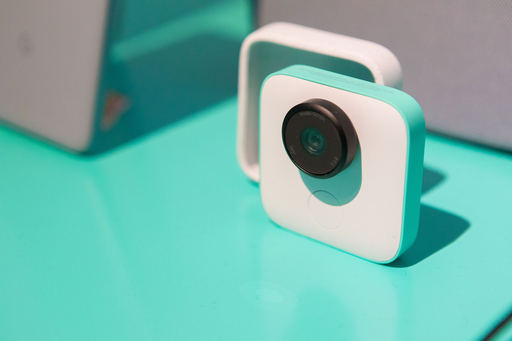

Video Frame Synthesis using Deep Voxel Flow

Abstract
We address the problem of synthesizing new video frames in an existing video, either in-between existing frames (interpolation), or subsequent to them (extrapolation). This problem is challenging because video appearance and motion can be highly complex. Traditional optical-flow-based solutions often fail where flow estimation is challenging, while newer neural-network-based methods that hallucinate pixel values directly often produce blurry results. We combine the advantages of these two methods by training a deep network that learns to synthesize video frames by flowing pixel values from existing ones, which we call deep voxel flow. Our method requires no human supervision, and any video can be used as training data by dropping, and then learning to predict, existing frames. The technique is efficient, and can be applied at any video resolution. We demonstrate that our method produces results that both quantitatively and qualitatively improve upon the state-of-the-art.
Public Video
Presentation
Code and Models

Paper Video
Product Transfer

Google Clips
Citation
@inproceedings{liu2017voxelflow,
author = {Ziwei Liu, Raymond Yeh, Xiaoou Tang, Yiming Liu, and Aseem Agarwala},
title = {Video Frame Synthesis using Deep Voxel Flow},
booktitle = {Proceedings of International Conference on Computer Vision (ICCV)},
month = {October},
year = {2017}
}